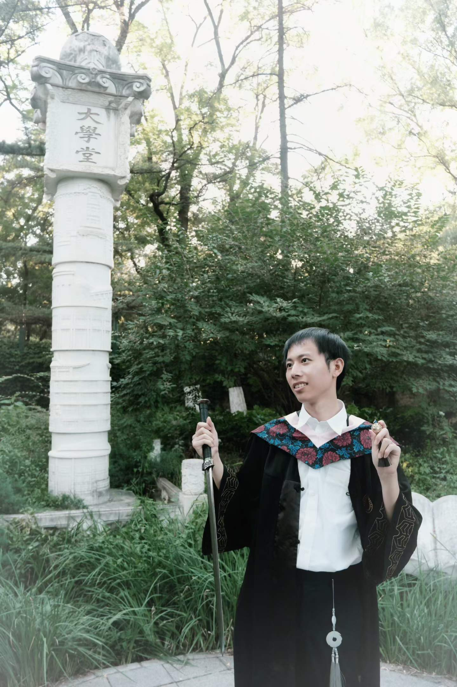

Jiashuo Zhang
PhD Student in Sociology
The Chinese University of Hong Kong
I am a PhD student in Sociology at The Chinese University of Hong Kong. My current work focuses on two areas. First, in political sociology, I study bureaucrats, organizations, institutions and networks of power in imperial China and contemporary China. Second, in so-call "computational social science", I try to solve some challenges in data getting and cleaning for quantitative social science research by developing workflow solutions and applying them to substantive research.
Education
Aug 2026 - Present
Ph.D. in Sociology
The Chinese University of Hong Kong, Hong Kong SAR
Sep 2021 - Jun 2026
LL.B. in Sociology
Peking University, China
Transferred from Chemistry
Feb 2025 - Jun 2025
Exchange Student
University of Melbourne, Australia
Research Interests
Teaching Experience
Teaching Assistant, Game Theory for Social Scientists (03131900)
· Peking University, China, 2024
Professional Memberships
American Sociological Association
International Sociological Association
Scholarships & Awards
Postgraduate
- Postgraduate Studentship, The Chinese University of Hong Kong (HK$229,200 annually)2026-Present
- CUHK Vice-Chancellor's PhD Scholarship Scheme (HK$80,000)2026
Undergraduate
- Guangzhou Pharmaceutical Wanglaoji Overseas Scholarship (¥10,000)2025
- Robin Li (Baidu) Scholarship (¥20,000)2024
- Merit Student (三好学生), PKU2023, 2024
- Cushman & Wakefield Scholarship (¥6,000)2023
- Freshman Scholarship, PKU (¥10,000)2022
Others
- Gold Medal in the 34th Chinese Chemical Olympiad2020